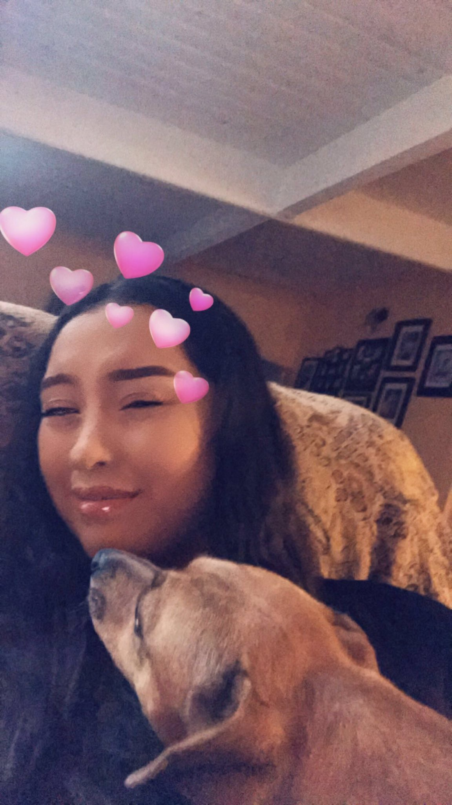
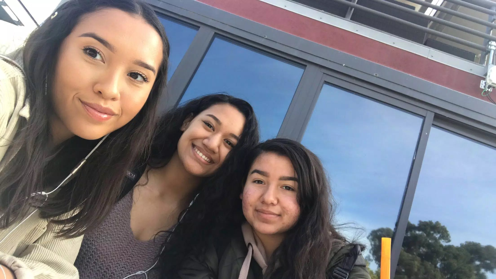
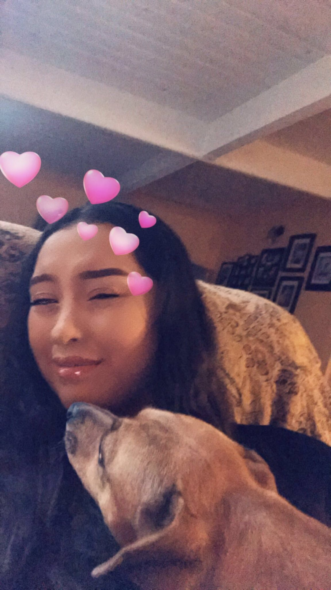
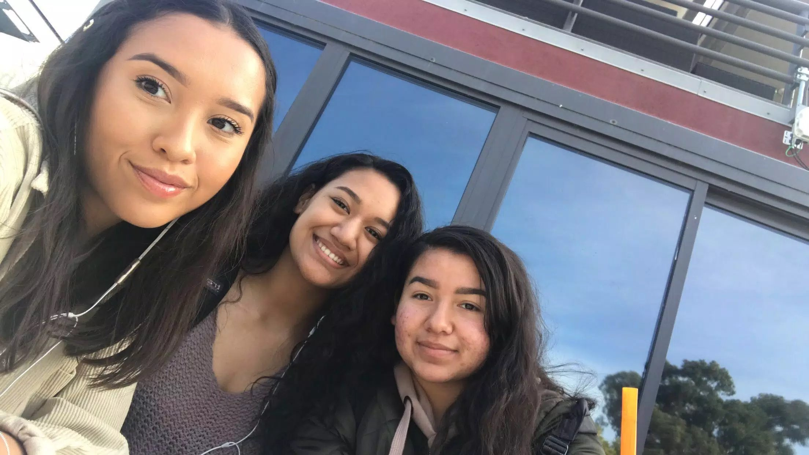

Bio:
Hey what’s up! I am a Girl Who Codes (jajaj get it). I am 16 years old and my birthday
is coming up this summer. I am a rising senior at Jesse Bethel High School. I am pretty nervous
for what senior year will bring me but I know everything will turn out smooth. I am from
Vallejo which is pretty far from San Bruno so it takes a 2 hour commute to get here every morning.
Interests:
I like being with my dog and finding out cool places to go out to eat. I enjoy going to the beach
and exploring different cities. When I am in the city I enjoy going to art musuems. One of
my favorite artists is Frida Kahlo and I plan on getting her face tattooed on my body. Self express
is something I really like so I spend most of my time trying to switch up my style. For the most part
I never have money but when I do I spend it all on clothes and makeup.
Fun Facts:
When I was 6 I broke my elbow lol. I really love art but I suck at drawing. I have an older
sister and we pretty much fight everyday, I think it's because we're both leos though. Despite
our three year difference we are still really close but that's mainly because we've shared a
room up until last year. And yea I'm pretty boring so I don't really know what else to put here.
Favorite Websites:
Twitter
: I love laughing at funny memes and videos. Twitter is also dang near like my personal diary
so I can get a bit annoying on there.
Youtube
: I watch all kinds of videos! My watch history ranges from makeup tutorials, cooking videos
and even funny pranks. When I was like 11 I wanted to become a youtuber but that dream never
pulled through.
Welp that's pretty much it about me! So enjoy these pics of me with friends and family. Hope
you learned a little something new from me. Have a good day!


 


